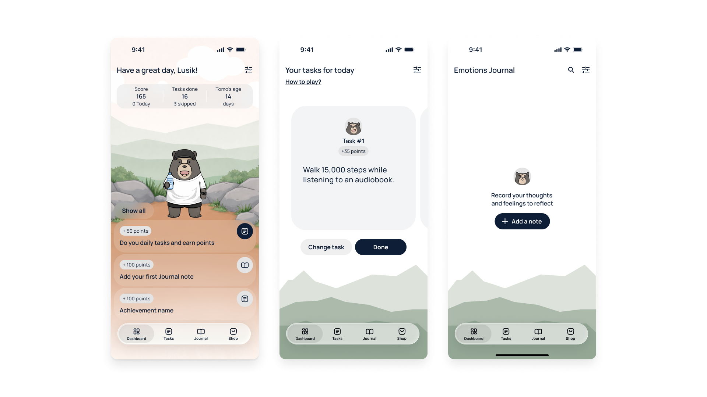
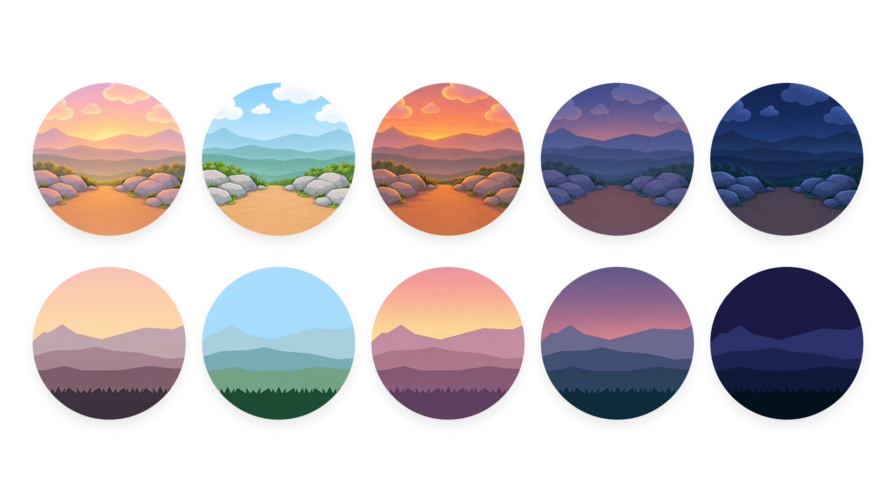
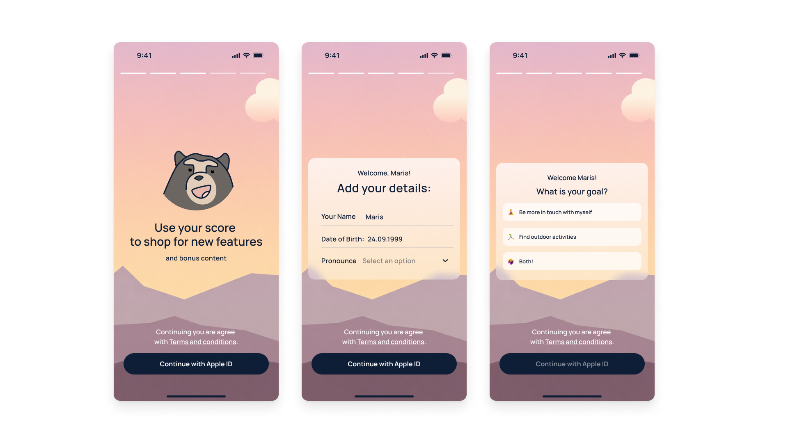
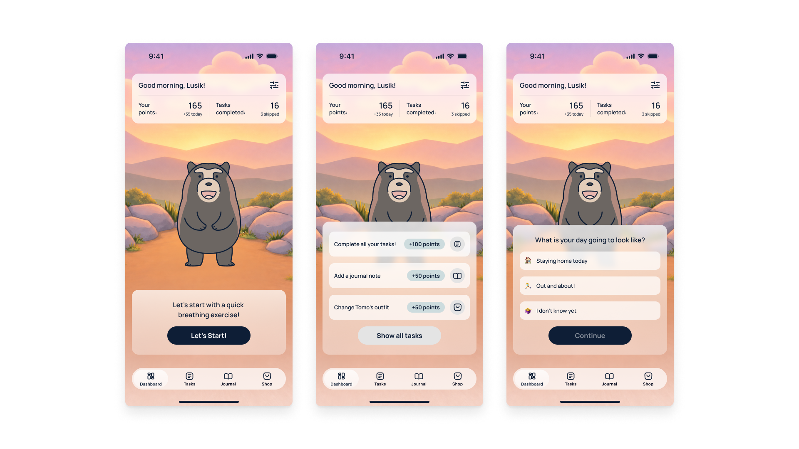
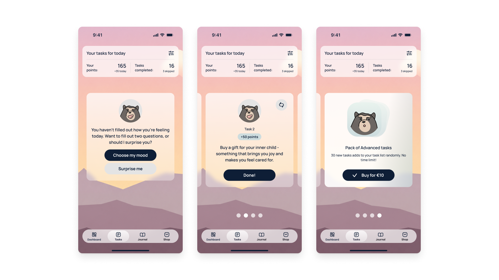
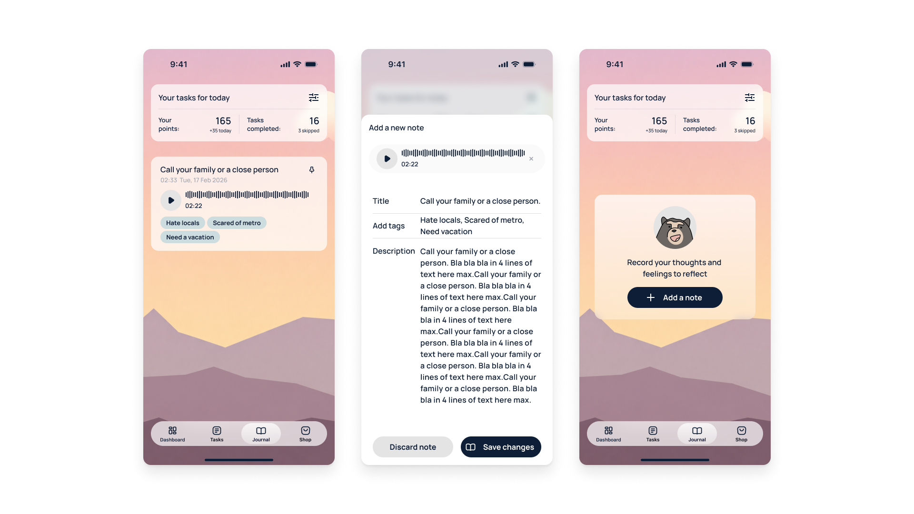
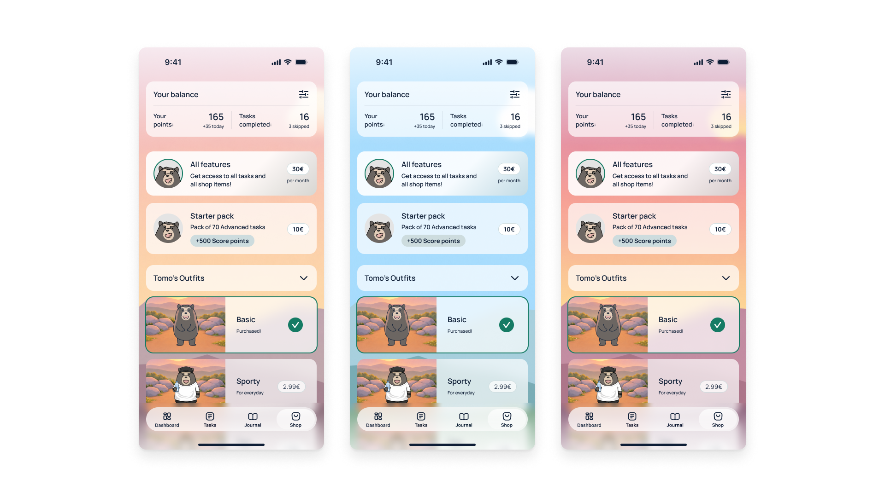

Problem statement
My friend's core challenge was retention: users weren't sticking around long enough to build a habit, which was also hurting in-app purchases. His data backed this up — over 60% of users stopped logging in after three consecutive days, and only 10% of users completed the preset tasks set without swapping them out.

Current app design
Digging into this, I noticed the deeper issue: tasks were being pulled randomly from a back-office list, with no regard for how the user was actually feeling that day. Self-improvement isn't one-size-fits-all — it shifts with mood, energy, personality, and lifestyle — so the tasks the app suggested needed to reflect that instead of treating every day (and every user) the same.
Initial ideation
I wanted to keep my friend's existing code structure intact and work within the app's simplicity rather than against it, so my approach became less about adding features and more about layering small, thoughtful touches that would nudge users back throughout the day.
The goal was to make self-care feel effortless: small interactions that ask very little of the user but still deliver a genuine sense of "I did something good for myself." That led to a few early ideas:
- A background that shifts with the time of day, so the character feels like it's actually living alongside the user rather than sitting in a static screen.

Dynamic background images
- Tasks categorized by indoor/outdoor and low/high mood, so they fit naturally into whatever the user's day actually looks like.
- A short daily questionnaire — just two questions, on location and mood — to drive that categorization without adding friction.

Mood models
Underneath all of this was habit-loop theory (trigger → routine → reward): each small touchpoint was designed to act as a trigger that pulls the user back in, again and again, until the behavior sticks.
The redesign process
Supporting a dynamic, time-of-day background meant rethinking how content sat on top of it — black text doesn't hold up against every background, so I designed containers that stay legible no matter what's behind them. I also pared down the color palette from the original style guide, reusing a smaller set more consistently. For an app this visually busy, simplifying the system wasn't optional, as it was what made everything else legible.
Onboarding
The original flow was three summary screens followed by name and pronoun entry. I kept the three screens, since they did a good job introducing the app, but added a short questionnaire in the same spirit as the homepage's — one that starts shaping a sense of the user's personality and feeds into task categorization from day one.
Asking for the user's name, date of birth, and pronouns helps the app sort users into meaningful categories and, just as importantly, lets the character relate to them personally rather than generically.
I also added step indicators to the top of the flow, so users always know how much is left before they're through sign-up. A small detail that removes uncertainty and makes onboarding feel like an easy task.

Onboarding screens
Homepage
The top navigation in the original design served an essential purpose, as seeing points and completed tasks at a glance is how users track their own progress. In the original, that visibility was limited to the homepage; and while I was using the app myself, I realized its information was crucial to other parts of the app, making it a permanent top navigation item in every section.
Upon opening the app, users complete a breathing exercise that serves as a moment to ground themselves before anything else happens. I added a subtle animation so the character breathes in sync with the user, turning a previously static screen into a handheld experience.
From there, the two-question mood/location check-in appears and drives the day's task recommendations (with a neutral option to randomize, for anyone who'd rather skip it). Once that's done, the homepage surfaces the day's tasks alongside other ways to earn points.

Homepage screens
Tasks
The task page still nudges users toward the short questionnaire, but never forces it — they can skip straight to a randomized set if they'd rather. Once the questionnaire is done, users see three tasks tailored to their mood and energy for the day, plus a fourth option: a paid pack unlocking 30+ additional tasks to browse and choose from.

Tasks screens
Journal
The journaling tab included features like voice notes, titles, tags, written descriptions — which was already solid, so I left the functionality alone.
What I changed was the format of the journal note entry: originally, adding a note took over the full screen, which made a two-minute action feel heavier than it needed to. I turned it into a drawer instead, so jotting something down stays quick and keeps the user inside the journal, not pulled out of it.

Journal screens
Shop
The shop stayed largely the same in function, just rebuilt with the updated components and layout. The bigger change was pulling the point total into the top navigation — as in the original, users had no way to see their balance while browsing, which made purchasing decisions feel disconnected from their progress.

Shop screen variations
Conclusion
Ultimately, this redesign was about stacking small moments that trigger the habit loop — each one reinforcing a sense of self-efficacy, that quiet confidence that comes from completing something you set out to do.
Just as important was building in self-compassion: giving users the ability to adapt tasks to what they actually need that day, rather than pushing through a rigid list. Self-care doesn't look the same for everyone, which is exactly why personalization had to be at the center of this redesign, not an afterthought.
Next steps
The next step is finalizing user testing before rolling these changes into the live product.
Future features
Looking further ahead, there's room to expand personalization even more — water tracking, sharing journal notes with a mental health professional, more mobile notifications and deeper background customization are all natural next layers to build on top of this foundation.